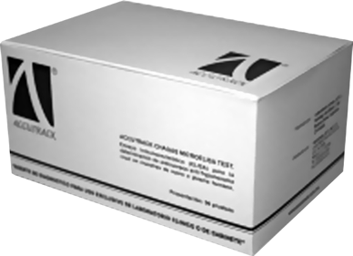

Accutrack hcg card test

DESCRIPCIÓN: Prueba rápida para la determinación cualitativa de gonadotropina coriónica humana (GCH) en orina, plasma o suero.
PRINCIPIO: ACCUTRACK HGC CARD TEST. El cartucho de plástico (o tira) contiene una membrana cubierta con reactivos necesarios para detectar la presencia de GCH y un control positivo para que el usuario pueda validar el resultado de la prueba. La muestra se aplica en la zona correspondiente e inicialmente reacciona con la anti-ß GCH específica monoclonal y con el anticuerpo del conjugado de oro coloidal. Por acción capilar, la mezcla emigra a través de la membrana reaccionando con un anti-GCH específico de la región de prueba. Si hay GCH en la muestra, el resultado se manifiesta por una banda colorida en la región de prueba. Si no hay GCH en la muestra, el área permanecerá blanca. La muestra fluye a la región de control. Una banda color rosa/púrpura se produce en la zona de control (C), lo cual indica que la prueba se realizó de manera exitosa y el resultado es válido.
FORMATO: Cassette.
MUESTRA: Suero, plasma y orina.
INTERPRETACIÓN:

TIEMPO DE RESULTADOS: 3 a 10 minutos.
PRESENTACIÓN: 50 pruebas.
ALMACENAMIENTO: 2 a 30°C.
SENSIBILIDAD: 25 MUI/ml.
ESPECIFICIDAD: 100%.
Registro: 0175R2015 SSA
DATOS COMPLEMENTARIOS: Para mayores informes comunicarse a:
ACCUTRACK, S.A. DE C.V.
Teléfonos: (55) 5524-4481, 5524-2644, 5524-4575
e-mail: ventas@accutrack.com.mx
www.accutrack.com.mx